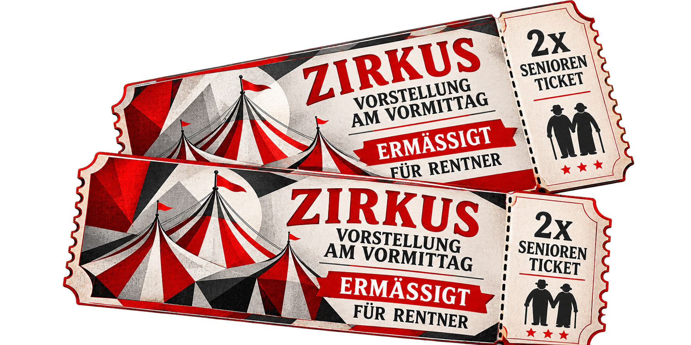

Senior:innen-Ticket
Unser Hauptticket – für Rentnerinnen und Rentner, die den Vormittag genießen möchten.
IHR PLATZ IN DER MANEGE
Liebe Seniorinnen und Senioren, wählen Sie Ihre Eintrittskarte. Enkelkinder und Begleitpersonen sind herzlich willkommen.
TICKETÜBERSICHT
Unser Hauptticket – für Rentnerinnen und Rentner, die den Vormittag genießen möchten.
Für einen gemeinsamen Besuch mit Enkelkindern und Familie (zwei Erwachsene und bis zu zwei Kinder).
Für eine Person, die Sie begleitet und unterstützt.
Für weitere erwachsene Gäste, die den Vormittag mit Ihnen erleben möchten.
Alle Preise sind fiktive Beispielpreise für das Studienprojekt. Es findet kein echter Verkauf statt.

UNVERBINDLICHE ANFRAGE
Das Formular zeigt beispielhaft, welche Angaben für eine Anfrage benötigt werden. Da ZIRKUS! ein Schulprojekt ist, werden keine Daten versendet oder gespeichert.
Informationen zu Anreise, Zugänglichkeit und häufigen Fragen finden Sie auf unserer Infoseite. Wenn Sie gemeinsam mit mehreren Personen kommen, planen Sie Ihre Plätze am besten zusammen.
Zu den Besucherinfos